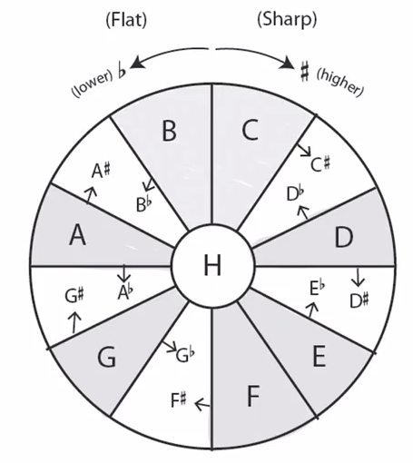

吉他课程 on Coursera
Table of Contents
1 guitar-class
https://class.coursera.org/guitar-006/lecture
- acoustic and electric guitar
- strings
- tuners
- frets
- chord block diagram / fretboard maps
- string names and numbers
- 1 = E
- 2 = B
- 3 = G
- 4 = D
- 5 = A
- 6 = E(two octaves lower)
- metronome / tuners
- picking
- pick picking
- up pick
- down pick
- up + down pick(2 notes)
- up + down pick(3 notes)
- up + down pick(4 notes)
- finger picking
- 6 + 3/2/1
- 6 + 3/2/1 + 5 + 3/2/1 + 4 + 3/2/1 + 5 + 3/2/1 …
- pick picking
- strumming 扫弦
- half-steps 半音
- 
- 12 half-steps(an octave) = 12 frets
- whole-step = 2 half-step
- rhythm 节奏
- beat 节拍
- measure(usually 4 beats) 小节
- note(音符) in an entire measure = whole note 全音符
- note in a half measure = half note 二分音符
- note in a beat = quarter note 四分音符
- eighth note 八分音符 / sixteenth note 十六分音符
- notation
- staff 五线谱
- clef 谱号，音符的音域范围和音高
- treble 高音 / bass 低音
- tablature 吉他谱/六线谱
- number on string = fret no. 0 = open string
- on vertical column, play them at the same time.
- staff 五线谱
- scales 音阶
- chromatic scales
- major scales